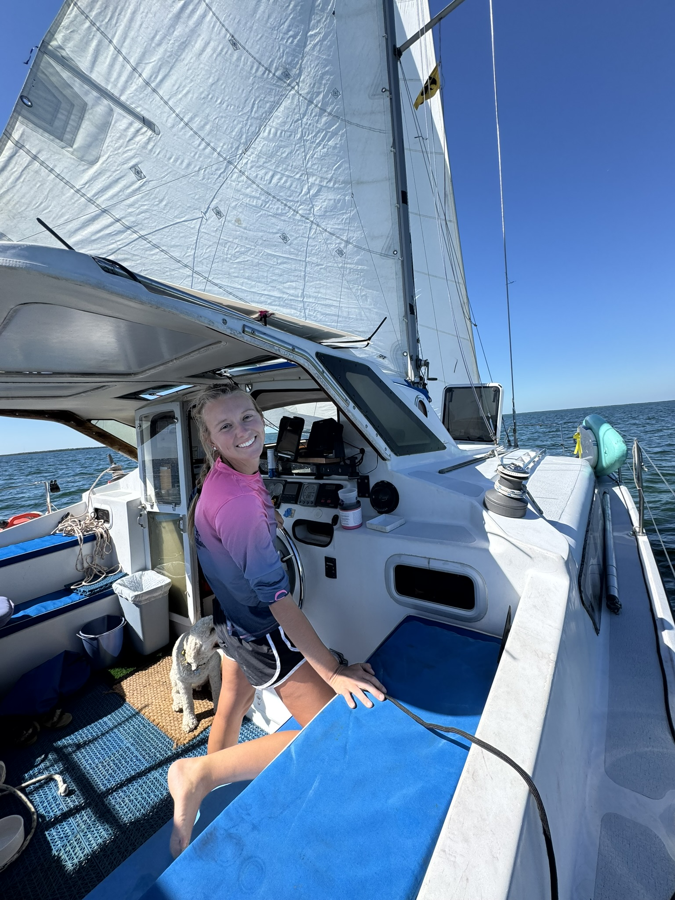

About Me



Hi, I’m Grace, the founder of Heartland Clutter Busters and a proud Sarasota local. I specialize in helping clients reclaim their spaces—whether it’s a complete hoarder home cleanout, preparing a home for sale, or organizing a cluttered space to make it work efficiently for everyday life.
I have hands-on experience managing everything from deep cleanouts to thoughtful organization projects. One of my most rewarding projects was cleaning out an entire hoarder home in Sarasota, transforming it into a functional and welcoming space ready for sale.
My passion lies in creating spaces that are not just clean, but smart, organized, and tailored to each client’s lifestyle. I love bringing order to chaos and making homes more livable, comfortable, and efficient.
At Heartland Clutter Busters, we don’t just remove clutter—we help you reclaim your space and design it to work perfectly for you.
Hi, I’m Grace, the founder of Heartland Clutter Busters. I specialize in judgment-free decluttering and home cleanouts. I love helping people reclaim their space and start fresh.
With hands-on experience and a compassionate approach, I work at your pace, making the process stress-free and organized.
When I’m not helping clients, I enjoy hiking, sailing, and finding an amazing sunset.